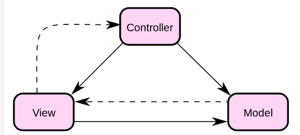

MVC
MVC 以及相关知识
什么是模块化？
背景：当我们在 coding 一个 web 应用时, 代码量肯定不少。然而把全部逻辑都写在一个 JS 文件里面会引起巨大的混乱, 稍有编程常识的人都会马上意识到这是一个需要解决的问题。 通常我们将自己的项目代码模块化, 即把应用拆为各自高度独立的模块, 模块间可以通过接口来通信, 有时甚至不需要通信. 然后将各个模块引入到一个文件里使用即可。
简言之：模块化编程就是通过组合一些相对独立可复用的模块来进行功能的实现，其最核心的两部分是定义模块和引入模块：
- 定义模块时，每个模块内部的执行逻辑是不被外部感知的，只是导出（暴露）部分方法和数据；
- 引入模块时，同步/异步去加载待引入的代码，执行并获取到其暴露的方法和数据；
MVC
与模块化的联系：在模块化后, 有人从后端里搬来一个 MVC 的概念, 把 web 应用也划分为了三个部分(Model, View, Controller).
简言之：为了解决编写web应用代码混乱的问题，需要对代码进行模块化，而模块化又引出了MVC的概念。
MVC 模式代表 Model-View-Controller(模型-视图-控制器)模式
Model - 操作数据
Model 层的代码负责获取到 web 应用所需要的数据, 在一些场景下还要负责处理数据的改动(增, 删, 改, 查)
const Model = {
data: {
x: 20
},
update(data) {
Object.assign(Model.data, data);
}
};
View
View 层负责用户能看见的部分, 比如页面的模板, 渲染函数等.
const View = {
html: `
<h1>hello</h1>
`,
render() {
// render the template
},
mount() {}
};
Controller
Controller 层负责 View 和 Model 都不处理的部分. 如事件绑定等
const Controller = {
events: {
fn1: "click #button1",
fn2: "click #button2"
},
bindEvents() {
for (const key in Controller.events) {
if (Controller.events.hasOwnProperty(key)) {
const [event, selector] = Controller.events[key].split(" ");
$(View.el).on(event, selector, Controller[key]);
}
}
},
fn1() {},
fn2() {}
};
M,V,C三者的关系图：

实线：方法调用 虚线：事件通知
表驱动编程
在上面的代码里, 我们使用了表驱动的概念来绑定事件. 我们抽象出有对应关系的数据作为一个抽象的表:

然后循环遍历地绑定事件, 这样就能避免笨重且重复地选中元素, 监听事件, 操作函数这一系列的操作. 现在我只需要写一次就行.
MVC 的逻辑:
在 MVC 的视角下, 一个 web 应用应当这样做:
View 调用 mount函数开始初始化, 将 View 的模板添加到指定的元素里, 再调用 Controller 进行事件绑定, 使用 eventBus 进行监听状态变化. 当我们在 web 应用里改变状态时, 会被 eventBus 监听到, 然后触发重新渲染页面的render函数. 当然, 有人发现我在 View 里调用了 Controller, 实际上, MVC 并不一定要彼此独立分开, 甚至全部组合在一起也是可以的. 那么这和不用 MVC 又有什么区别. 虽然代码组合在一起, 但是结构依然要清晰, 如果我们能够定义好el,template,mount,render,data. 那么这个 web 应用依然能够大大地解决代码结构混乱, 意大利面条代码等问题的.MVC 并不是最终的解决方案, 它后来也开始分化(由于理念的不同), 演变出了 Angular, Vue, React 等框架与库.
EventBus 有那些 API，是做什么的？
eventBus用于在对象之间的通信. 是根据发布-订阅模式来实现的.下面会 cover 到它的 api 和实现方法.
- API:
on(msg,fn)接受两个参数, 第一个参数msg表示监听的事件名, 然后触发fn函数.off(msg)接受到msg后删除所有监听msg的事件trigger(msg, [params])接受到msg后调用对应的fn, params为可选参数
- 用途：
- 主要用于对象间通信
- 使用 eventBus 可以满足最小知识原则，m 和 v 互相不知道对方的细节，但是却可以调用对方的功能
手写EventBus：
class EventBus {
constructor() {
this.events = {};
}
on(msg, fn) {
if (!this.events[msg]) {
this.events[msg] = [];
}
this.events[msg].push(fn);
}
trigger(msg, params) {
this.events[msg].forEach(item => {
item.apply(this, params);
});
}
off(msg) {
if (!!this.events[msg]) {
delete this.events[msg];
console.log(`DELETE ${msg} COMPLETED!`);
} else {
console.error("CAN'T DELETE PROPERTY OF UNDEFINED");
}
}
}
export default EventBus;
实际上, eventBus 里有一个events对象, 我们监听的事件名是对象的key, 而value是一个数组, 数组里的元素就是fn. 最后, 要实现 eventBus 的功能, 必须要在全局的环境下调用.所以通常把 eventBus 放在顶部, 如果你的应用里使用到 Class, 那么 eventBus 应当作为 class 的祖先类.如class MVC extends eventBus{}. 实际上, DOM API也是这样做的:

DOM的原型链上层能发现eventTarget, 它的三个API和我们这里的三个实际上是一样的.